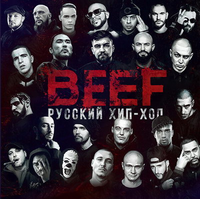
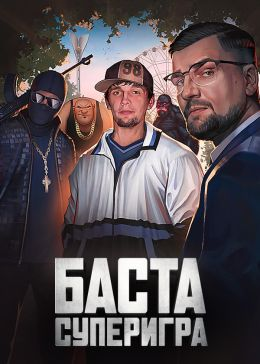
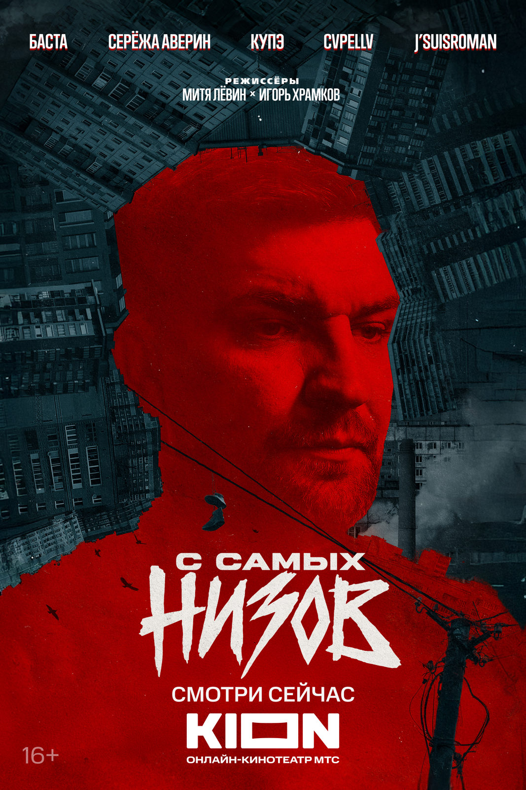
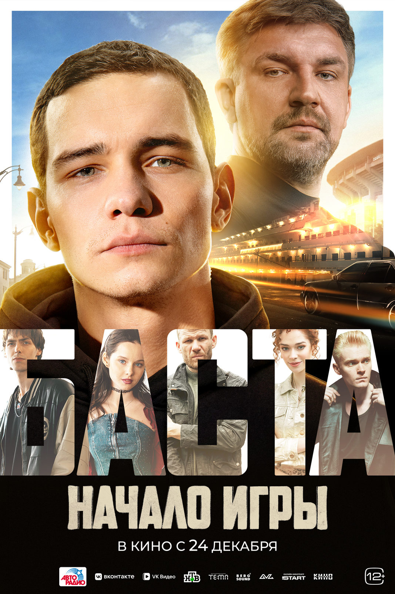

Главная | Общая информация | История | Дискография | Фильмография | Источники | Заказать | Контакты
| Год | Название | Трейлер/Тизер | Афиша | Примечание |
| 2019 | Документальный фиьм. BEEF: Русский хип-хоп |  | Фильм прослеживает путь русского рэпа — от андеграундных квартирников и подвалов до огромных стадионов. Через истории и откровенные разговоры с ключевыми фигурами сцены авторы пытаются ответить на главный вопрос: как хип-хоп завоевал массовую аудиторию и стал «музыкой номер один» в России. Картина не только показывает взлёт, но и обнажает внутренние конфликты, трудности первопроходцев 90-х и то, как на карьеры влияли личные обстоятельства. | |
| 2022 | Баста. Суперигра |  | Документальный фильм о творческом пути Василия Вакуленко (Басты). В основе — архивные кадры 20‑летней давности, интервью с семьёй и коллегами (Хабенский, Ургант, Шнуров, Гуф и др.). Лента раскрывает не только карьерный рост артиста, но и личные истории, сложные периоды и источники вдохновения. | |
| 2025 | С самых низов |  | Документальный проект, где Баста (Василий Вакуленко) выступает наставником молодого музыканта Сергея Аверина. Вместе они доводят его трек до профессионального уровня: работают над текстом, битом и записью, а в финале готовят лайв-презентацию. Проект показывает закулисье музыкальной индустрии и то, сколько труда стоит за каждым релизом. | |
| 2026 | Баста. начало игры |  | Биографическая музыкальная драма о первых шагах Василия Вакуленко на пути к образу Басты. Действие — Ростов‑на‑Дону на стыке 1990‑х и 2000‑х: квартирники, клубы, поиски своего голоса и первые тексты. Герой сталкивается с недоверием близких, конкуренцией в тусовке и внутренними сомнениями, но упорство и искренность текстов постепенно приносят отклик публики. Отсылка к раннему хиту «Моя игра» читается и в названии, и в логике пути артиста. Премьера — 24 декабря 2026 года. |
© Все права защищены. Мякишева А.Г. ЭФЦ331-1 2026